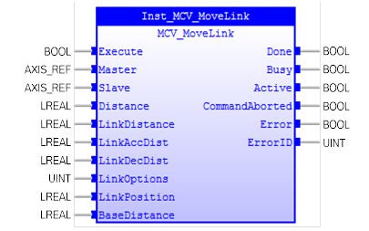

Commands a linear move with separate acceleration and deceleration phases linked via a software gearbox to the measured position of master axis.

MCV_MoveLink is used to for linear move with separate acceleration and deceleration phases linked via a software gearbox to the measured position of another axis.
When MCV_MoveLink is executed, slave axis’ PLCopen state changes to ‘SynchronizedMotion’.
Make sure the input and output parameters are of data type indicated in the table below.
The “link” axis may move in either direction to drive the output motion. The link distance specified is always positive.
If the sum of ‘LinkAccDist’ and ‘LinkDecDist’is greater than ‘LinkDistance’, they are both reduced in proportion until they are equal to ‘LinkDistance’.
MCV_MoveLink is equivalent to TrioBASIC command MOVELINK. Please refer to TrioBasic Help for more information.
|
Name |
Data Type |
Description |
|
INPUTS |
||
|
Execute |
BOOL |
Start the motion at rising edge |
|
Master |
AXIS_REF |
Reference to the master axis. It is the same as ‘link_axis’ in MOVELINK. Please refer to TrioBasic Help on MOVELINK for more information. |
|
Slave |
AXIS_REF |
Reference to the slave axis |
|
Distance |
LREAL |
Incremental distance in user units to be moved on the current base axis (Slave) due to the measured movement on the “input” axis (Master) which drives the move. |
|
LinkDistance |
LREAL |
Positive incremental distance in user units which is required to be measured on the “link” axis (master) to result in the motion on the slave axis. |
|
LinkAccDist |
LREAL |
Positive incremental distance in user units on the input axis over which the slave axis accelerates. |
|
LinkDecDist |
LREAL |
Positive incremental distance in user units on the input axis over which the slave axis decelerates. |
|
LinkOptions |
UINT |
Bit value options to customize how your MCV_MoveLink operates. Please refer to TrioBasic Help on MOVELINK for more information. |
|
LinkPosition |
LREAL |
LinkOptions bit 1 - the absolute position on the link axis in user UNITS where it is to be start. LinkOptions bit 9 – the registration channel to start the movement on |
|
BaseDistance |
LREAL |
Firmware V2.0253 onwards. The “base distance” is the distance that is to be travelled at the base speed and is part of the total first “distance” parameter. . Please refer to TrioBasic Help on MOVELINK for more information. |
|
OUTPUTS |
||
|
Done |
BOOL |
The FB is not finished and new output value is to be expected. |
|
Busy |
BOOL |
The FB is not finished and new output values are to be expected. |
|
Active |
BOOL |
Indicates that the FB has control on the axis |
|
CommandAborted |
BOOL |
'Command' is aborted by another command |
|
Error |
BOOL |
Signals that an error has occurred within the FB |
|
ErrorID |
UINT |
Error identification |